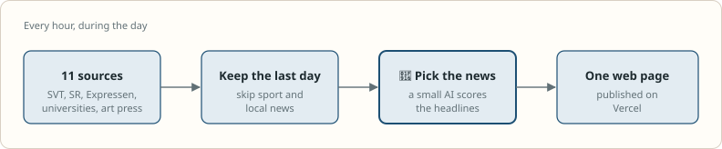
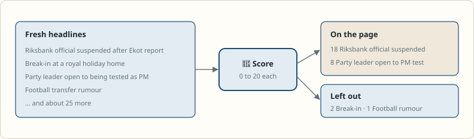

🧭 Techulture
A small, self-updating digest of Swedish culture and news, built from public feeds and picked partly by a local language model that runs inside GitHub Actions.
What it does
Techulture gathers Swedish culture news in one quiet place: culture desks, art criticism and university press rooms, plus a short column of general news.
Once an hour, a job on GitHub fetches the latest items from eleven sources, drops what is too old, lets the AI pick the news and writes one simple web page.

A small AI that picks the news

The AI is Qwen2.5 3B, a small open model from Hugging Face.
Sources
Culture: SVT Kultur, SR Kulturnytt, Expressen Kultur, Kunstkritikk, Konstfack, and the universities in Stockholm, Uppsala, Lund and Södertörn.
News: SVT Nyheter and SR Ekot, picked by the AI.